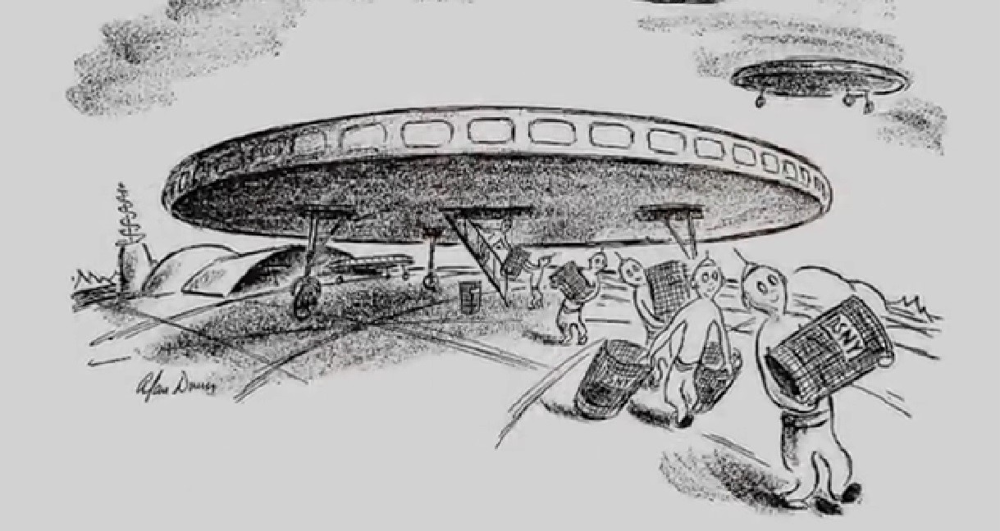
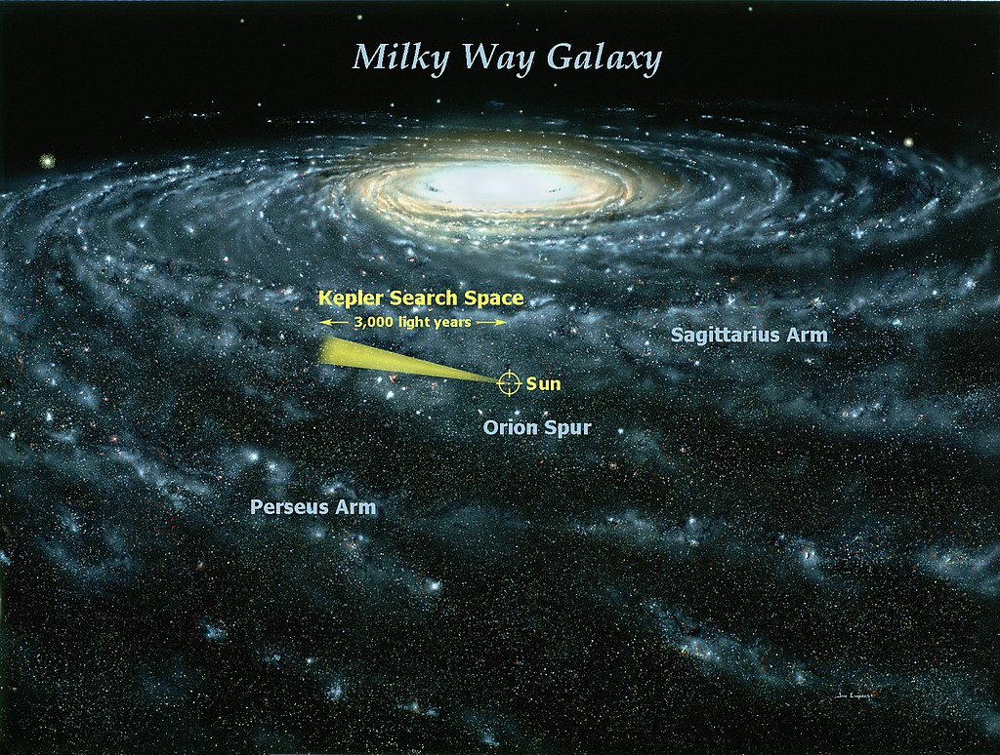
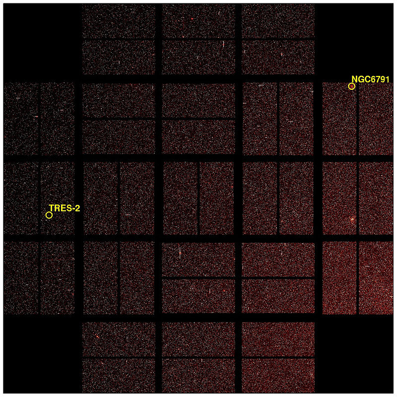

Парадокс Ферми

Сейчас иы поговорим о такой интересной штуке,как парадокс Ферми.
Начнем мы с небольшого рассказа о человеке, в честь которого назвали этот парадокс - это Энрико Ферми, итальянский физик, больше всего известен как изобретатель, первого в мире, ядерного реактора, в честь него назвали улицу и кратор на обратной стороне луны.
Что-ж, это было увлекательно, а теперь о самом парадоксе...

Дело было в 1950-м году, в те времена, когда научная фонтастика трубила о пришельцах и вера в них достигала своего пика; в рабочей столовой, Ферми и три его коллеги, обсуждали иллюстрацию в New York Times, которя показывет, что все урны в городе украли инопланетяне.
Если знать, что любой разговор такого плана, рано или поздно переходит к философии или политике, то нет ничего удивительного в том, что они решили основательно обсудить отсутсвие каких-либо признаков внеземных цивилизаций, а Ферми добавил что-то вроде "Вы задумывались о том где все..?"
Эпичная фраза! Я точно задумывался и я, правда, сторонник того, что мы не одни во вселенной. Никакой конспирологии нет, нас никто не посещал и среди нас никто такой не живет (навернрое). Но вот во всей вселенной, о котрой мы ничего почти не знаем, думаю, все-же да...
У нас есть технологии принятия сигналов из космоса, в стравнительной близости от нас есть планеты, вроде как, пригодые для жизни, а мы видим космос, больше чем на 13 млрд световых лет, но если учесть тот факт, что вселенная расширяется, а галактики отдаляются, то мы можем вмдеть и все 46 млрд световых лет во все стороны. В километрах я такую цифру даже на экране не смогу разместить, но я знаю как выкрутиться - это примерно 435 триллионов км. Так где все?
Это и есть парадокс Ферми. Только произошло небольшое недопонимание. Если судить по единственному существующему документу об этом, Ферми не имел ввиду, что пришельцев нет, он рассуждал о том, что может еще нет таких ракет и технологий, чтобы к нам добраться, а еще может быть другие цивилизации еще не появились или наоборот уже умерли, а уже потом по счастливой случайноси Ферми приписали совсем другие взгляды. Описал все это астрофизик Майкл Харт, в 1975 году, и началось... Поэтому логичней было бы назвать парадокс Харта. Но все это приписали Ферми, из-за эпичной фразы сказанной в столовой.
Иногда скептицизм заходит настолько далеко, что становится уже какой-то навязчивой идеей. Может тогда уже подвергнем сомнениям форму земли??? Ах, да...)
Решение парадокса
С предисторией разобрались, но есть ли ответ? Что говорят ученые?
Считается что есть несколько вариантов решения парадокса;
Вариант первый - мы отсталые ребята, мы самонадеянно ждем, что кто-то прилетит из далеких краёв. Если у кого-то есть такие технологии добраться до нас, то, разумеется, у них есть технологии покруче наших, мы ведь не можем так сделать. А если у них есть иехнологии покруче, то мы для них отстаём в развитии и вполне вероятно, что нет никакого смысла лететь к отставшей цивилизации. Ведь вряд-ли из вас кто-то ходит в зоопарк, только для того, чтобы поговорить с животными) А даже если и так, то чего вы вообще ждете??
Кстати, это натолкнуло на второе решение - Гипотезу зоопарка. Предтваим, что сейчас животные, это мы, а пришельцы - люди. И мы просто находимся в большом заповеднике и, как и животные, просто никогда не видели создателей этого заповедника. Это увлекательно, это называется невмешательсво. Интересто получается, если мы для них животные, то кто тогда для них ЖИВОТНЫЕ?
Парадокс СЕТИ
Давайте немного отвлечемся и поговорим еще кое о чем. В парадоксе Ферми есть еще один парадокс - парадокс СЕТИ. Это программа поиска внеземных цивилизаций. Парадокс заключается в том, что мы ищем, но сами не отправляем какие-то сигналы, чтобы нашли нас. Фишка в том, что если все цивилизации ищут как и мы, то никто никогда ничего не найдет. Вот же тупость... Нет, мы конечно пытались, но это было не очень серьйозно.
Проблема СЕТИ заключается в том, что всё это очень узконапраленно. Они не ищут какие-то организмы по всему космосу, они ищут какие-то сигналы на определенных радиочастотах в определенном радиусе. Многие даже называют это бессмысленным. А представьте какая будет ржака, когда мы узнаем, что другие цивилизации вообще не пользуются радио и мы поймем, что все спонсоры СЕТИ просто вливали огробные деньги в ничего) Просто другие цивилизации шагнули немного вперед, потому что появляются все новые технологии и радио будет в ходу от силы пару сотен лет. Это был бы максимальный провал. Все наши радиопередачи за все время распростанились на ничтожные 100 с лишним световых года, когда наблюдаемая вселенная около 46 миллиардов световых лет. Это как кричать, когда у тебя нет голоса.
Существует и третье решение парадокса Ферми - мы одни.
А такое возможно? ведь если мы появились, то гдето-то тоже может появиться. Нельзя же этого исключать.
Исследователи говорят, что около 22% звезд солнечного типа, наблюдаемых орбитальным телескопом Kеpler, имеют потенциально обитаемые планеты размером с землю. А знаете сколько звезд он наблюдал? Около 100тыс. Выходит во всей вселенной потенциально обитаемых планет должно быть просто куча.может на них есть вода, может быть мы бы тоже смогли там находиться.
Так может быть это и есть ответ? Все намного сложнее. Никто не горантирует того, что эти планеты могут быть обитаемыми, хоть там 300 раз подходящие условия. Так что даже если мы квидим в телескоп вторую землю далеко-далеко, мы не можем быть уверенны, что там тоже есть жизнь. Пока что мы одни, так как нет доказательсва обратного.
Уравнение всего
А знаете кто может решить парадокс Ферми? Никто, но это пытался сделать Френк Дрейк. Он создал настоящее уравнение, которое покажет одни ли мы во вселеной. Вот так оно выглядит. Мы пытаемся выяснить количество внеземных цивилизаций готовых на контакт. Каким же образом мы будем это делать? Тут все подробно расписано.Берем количество звезд образующихся в год в нашей галактике, умножаем на долю солнцеподобных звезд, обладающих планетами, затем на среднее количество планет с подходящими условиями для появления жизни, потом на вероятность зарождения жизни на таких планетах, далее на верояность возникновения разных форм жизни на них, следом умножаем на долю цивилизаций, у которых может возникнуть технология, которую мы увидим или услышим и наконец мы умножаем на период времени, в течении которого такие цивилизации выпускают обнаруживаевые сигналы в космос. Что-ж, вроде все просто. И вы спросите, так каков ответ? Да чтоб я знал. Дело в том, что переменные мы знаем очень приблизительно и одного ответа не существует, но уравнение Дрейка не пытается что-то решить. Оно созданно для стимулирования дискуссии. Есть одна проблема. Шде же все? А уравнение позволяет разделить проблему на понятные задачи и решать их пстепенно. Решения есть разные, начиная от того, что мы совсем одни и заканчивая тем, что вокруг нас просто кишит друшими цивилизациями.
А где же правда? Пока что у каждого своя...
Сколько мы видим на самом деле?

Основную информацию о потенциально обитаемых планетах мы полчали с аппарата Кеплер. Только вы видели его радиус обзора на данный момент? Он отмечен жёлтым.
Он изучил вот на столько мало даже в масштабах нашей галактики. А сколько галактик нам пока известно? Где-то две тысячи миллиардов галактик. По последним оценкам около двух триллионов. Вы там не умпали в обморок? Я был к этому очень близок. Потом посмотрите на снимок с него и просто находитесь в шоке от масштаба происходящего..

А он смотрит всего-то в замочную скважину. Благо сейчас начал работать телескоп Tess, который по расчетам, около 20 тыс. новых планет вне солнечной системы откроет.
Зная это, насколько же надо быть писсимистом, что мы одни, ведь наш поиск только начался. Все что нам остаётся, ждать данных с телескопа Джеймса Уэба, запущенного в 20-м году, который в том числе будет следить за планетами, пригодными для жизни. А после него запустят телескоп PLATO, который выяснит благоприятные ли условия жизни на планетах.
Итог
Подытожим, мы слушаем космос ничтожно короткий промежуток времени. Мы так или иначе отправляем сигналы очень недавно. Видите вот эту маленькую точку?

Это вот в этом радиусе пока что слышны наши радиоволны. Цивилизации могла еще не появиться, а может уже погибнуть. Мы можем быть еще не готовы ко встрече, а может быть нас специально держат в неведенении и из этих вариантов мы не знаем, какой правильный. Вполне возможно, что никакой. Такие вот неутешительные прогнозы.